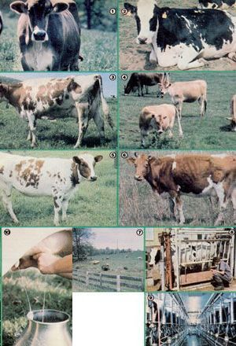

Photos By The Author
Bovine breeds: [1] Brown Swiss . . . [2] blackspotted Holstein . . . [3] brownspotted Holstein . . . [4] Jersey . . . [5] Ayrshire . . . [6] Guernsey. [7] A good milkmaker will require well-balanced, high-protein rations, as well as hay and pasture grass. [8] A sturdy metal milking stand. [9] A commercial milking parlor. [10] The backyard dairy cows ""liquid"" assets are ample payment for the small amount of care she'll require